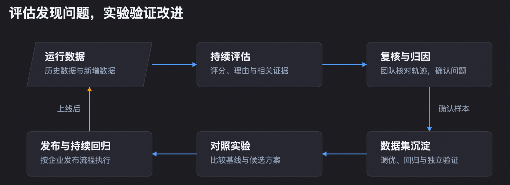
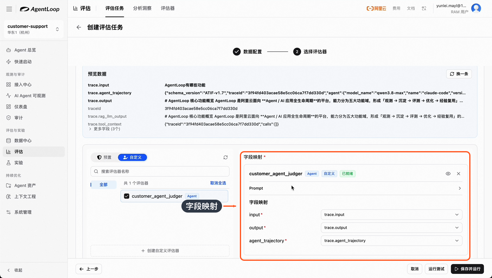
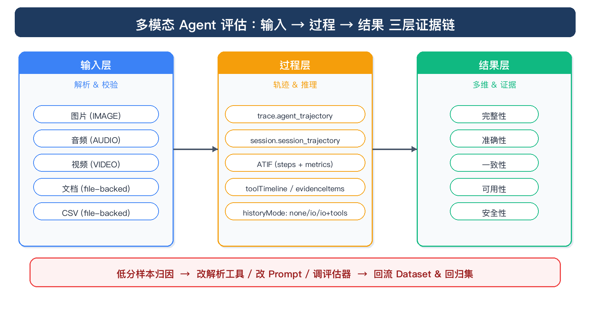
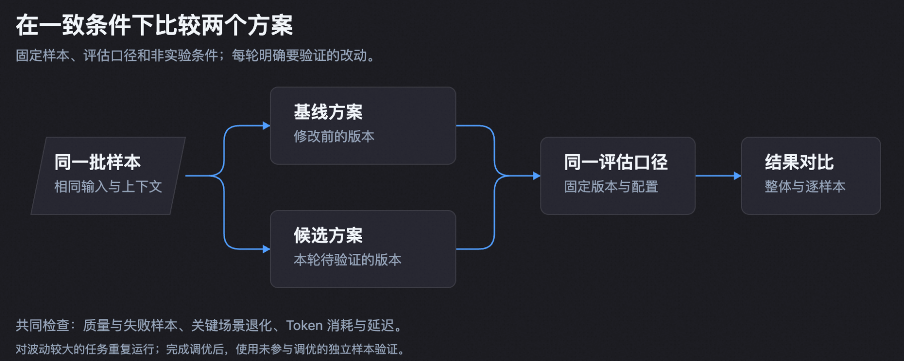

第 22 章 Agent 优化：Badcase¶
上一章中已经把业务问题和判断依据准备好。业务团队接下来需要做的是：让评估持续发现回答和执行过程中的问题，再用同一批题目验证修改是否有效。
本章沿用产品客服 Agent 的实践：用户会问“Agent 观测与优化有哪些功能”“如何做评估”，团队希望回答既准确，也能指导用户完成操作。评估检查已经发生的执行；实验则让修改后的 Agent 重新回答，产生新的输出和轨迹。

22.1 先选一个业务问题，做出能用的评估器¶
第一次建立评估，不必同时覆盖所有业务。产品客服团队可以先选“回答了相关概念，却没有解决用户的问题”这一类投诉，拿出几条专家认可的回答和几条明显有缺陷的回答，讨论差别在哪里。
例如，“有哪些功能”需要覆盖主要能力并说清用途；“如何做评估”需要说明准备数据、配置标准、运行评估和查看结果的过程。两者都要求准确，但对完整性的要求不同。团队先写通用标准，再为已经进入实验集的题目补充各自的 Rubric，具体录入方法见上一章。
一份可开始试用的通用标准，可以要求评估器检查三件事：是否回应了用户的实际问题；关键说法是否有材料支持；需要操作的任务是否提供了足以继续执行的步骤。每项写清满足、部分满足和不满足的条件，并要求给出扣分原因。涉及退款、权限变更等操作时，再增加业务结果检查，避免只评价回复是否礼貌。
进入控制台“评估 → 评估器”，先查看预置评估器是否覆盖目标。已有任务完成度等指标能够满足需求时，可以先复用；需要产品知识或特定服务标准时，再创建自定义评估器。在 Prompt 中写入评判标准，声明所需的用户输入、Agent 输出和轨迹变量，在输出定义中配置分数、判断与解释。场景分类、逐项得分等字段按实际分析需要增加，不必把所有可能用到的字段一次填满。
评估方式也按业务选择：
| 需要判断的问题 | 可以怎样选择 |
|---|---|
| 输出是否符合 JSON 格式、必填字段是否存在 | 采用 Code 规则，先解决确定条件的检查 |
| 回答是否切题、是否遗漏必要信息 | 使用 LLM 评估，把参考材料和评分细则给齐 |
| 是否完成多步骤任务、工具结果与最终回复是否一致 | 使用 Agent 评估，结合轨迹检查；需要领域知识时可挂载相应 Skill |
一个任务可以选择多个评估器。例如，把“回答质量”和“业务操作是否完成”分别评估，后续能直接看出是哪一项下降。若需要总分，在评分标准中明确计算方式；不能把多个评估器的结果简单平均，就默认代表业务质量。
22.2 用几条真实样本试评，再启动第一批历史评估¶
评估器保存后，进入“评估 → 评估任务”，点击“创建评估任务”。这一步要把评分标准接到真实数据上，最有价值的检查是确认评估器看到了完整的问题、回答和执行过程。
先选对数据和范围。 要评新接入 Agent 的表现，可选择“Agent 轨迹”；数据已经经过 Pipeline 清洗、聚合并补齐业务字段时，选择相应数据集。使用轨迹或 Trace 来源时，按对应入口选择“单轮对话”或“多轮对话”；多轮会话还需配置“对话结束判断”，让任务完成后再评价。使用 Dataset 时，直接选择集合并映射字段，一行代表什么已经由前面的数据加工决定，无需再寻找单轮、多轮开关。
第一次运行可以开启“基于历史数据评估”，选择一段已知包含目标业务的时间，例如最近四小时，再点击“数据预览”。确认其中确实有需要调查的问题，而不是其他 Agent 或无关调用。若多轮会话预览为空，检查时间范围内的会话是否已达到设定的结束条件。
把试运行规模控制在能逐条看完的范围。 在“采样配置”中设置采样比例和最大样本数。操作演示使用 100% 采样、最多 100 条：它限制的是候选数据量，不能保证得到 100 条 Badcase。刚开始也可以只取更小的一批，先由业务人员看完解释，再扩大范围。
接好字段，再运行测试。 选择评估器后，界面会展示预览样本和“字段映射”。按样本中实际存在的字段配置：用户问题映射到输入变量，最终回答映射到输出变量，需要过程判断时再映射完整轨迹。变量名称可以自定义，但内容必须对应。例如，需要“最终回答”的位置不能误接到某次工具调用的输出。

操作演示：将评估器的 input、output、agent_trajectory 分别接到预览数据中的问题、回答和轨迹，再进行测试。
点击“运行测试”，阅读评分和解释，然后使用“换一条”继续验证。至少覆盖一条已知好回答、一条已知坏回答，以及一条信息不完整的样本。检查时可以直接问：扣分依据是否真的出现在这条回答中？评估器是否引用了正确的工具结果？缺少证据时是否说明无法判断？
如果坏回答被判高分，先看收到的输入，再看评分条款。比如评估器只检查是否提到“评估器”这个词，就可能把泛泛介绍当作操作指导，需要补充“能否让用户完成下一步”的标准。调整后重评同一批样本，确认原来的好回答没有被一并误判。
图片、音频或文档任务也按这个顺序试评。先确认评估器能读取对应材料，再核对它引用的页码、片段或字段。例如，判断报销金额是否正确，需要看到票据和填报结果；仅收到文件链接或一句“已完成”不足以作出判断。

正式创建前，可以在“评估结果输出”中打开“写入评估结果数据集”。首次使用可留空结果数据集，由系统创建；已有明确用途的目标数据集时，也可选择追加写入。通过“透传源数据字段”保留用户问题、原回答、场景标记等后续复核所需材料。结果数据集配置在任务创建后不可修改，应在这里一并安排好。
最后点击“保存并运行”。任务结束后，先检查实际处理数量和失败记录，再开始分析得分。预览成功说明单条配置可用，第一批正式运行才会暴露是否选错范围、部分样本缺字段等问题。
22.3 从结果里选出值得修复的 Badcase¶
进入评估任务结果，先看整体分布，再打开具体样本。需要跨任务分析时，可进入“分析洞察”，按评估器、数据来源和分数范围筛选。查看低分时还要带上任务和时间范围，避免把不同标准、不同业务的数据混在一起比较。
一条结果至少要把原始问题、Agent 回答、分项判断和解释放在一起读。总分告诉团队先看哪里；解释帮助判断问题是否成立；轨迹则用于确认为什么出现这个问题。不要看到低分便立即改 Prompt。
以“如何做评估”这道题为例，可以按下面的顺序处理。这里的判断方式同样适用于客服、数据分析和代码任务。
| 读到的现象 | 继续查看什么 | 本轮应采取的动作 |
|---|---|---|
| 回答介绍了概念，却缺少运行和结果分析步骤 | 评分条款是否要求操作指导，回答是否确实遗漏 | 确认为回答完整性问题，纳入调优样本 |
| 回答已有关键步骤，解释却说没有 | 映射后的输出是否完整，是否用了另一道题的标准 | 修正评估器或映射，重评受影响样本 |
| Agent 声称操作完成，轨迹显示工具失败 | 失败后的处理和最终业务状态 | 保留为任务执行问题，交给负责该行为的团队 |
| 结果显示执行异常或材料缺失 | 任务错误、采集范围、附件可读性 | 先补齐执行条件或材料，再判断 Agent 质量 |
在操作演示的一次实验回测中，“有哪些功能”和“如何做评估”分别得到 0.25 和 0.5。这两个分数对应当次回答与当时的 Rubric；真正有用的是逐项解释指出了哪些能力点没有覆盖。团队因此能够检查缺的是知识、回答组织还是题目标准，而不是笼统认为模型不够强。
结果写入 Dataset 后，可以按实际输出的分数字段或判断字段筛选候选，再由业务人员复核。保留确认的问题、预期行为和依据，形成后续实验用题。最初不需要收入所有低分样本：同一种遗漏选择有代表性的几条，同时保留边界场景和一部分原本正常的任务，才能验证修复是否带来退化。
人工发现评估器误判的样本也很有价值，应留作校准材料。这样下一轮既能检查 Agent 是否改善，也能检查评估器是否仍在犯同样的错误。高分样本要适当抽检，避免只看低分而漏掉评估器未识别的严重问题。
历史评估得到稳定判断后，再开启“基于新数据持续评估”，配置间隔和采样。日常优先看关键指标下降、反复出现的问题及新场景，每次选一小组明确问题进入实验。大流量下可以降低采样比例，再用专项历史评估补查重点场景。
22.4 把确认的问题配成实验，评估这次新生成的答案¶
回到“有哪些功能”和“如何做评估”两道题，团队可以提出一个具体改进：补齐产品知识，并要求回答操作问题时给出步骤。先记录当前方案作为 Baseline，再准备候选方案。若同时换模型、改 Prompt、增添 Skill，分数变化就难以解释；第一轮可以先只改变最有依据的一项。
进入“实验 → 实验计划”，点击“新建计划”，选择数据集和实验类型。“在线实验”用于在平台配置模型并直接运行；测试企业自己的 Agent 时，可以选择通过 SDK 执行的“本地实验”。这里的在线实验不等同于向生产用户做 A/B 分流。
随后配置需要使用的评估器和变量映射。实验与前面的历史评估有一个关键区别：被评分的必须是本次生成的新回答和新轨迹。
| 评估变量 | 实验中应接入的内容 |
|---|---|
| 用户输入 | 本次实际发给模型或 Agent 的问题 |
| Agent 输出 | 本次执行生成的新答案 |
| 运行轨迹 | 本次实验关联的执行过程 |
| 参考答案或预期行为 | Dataset 中对应题目的参考字段 |
rubric |
Dataset 中该题的评分细则 |
逐题 Rubric 的录入完成后，在评估器中声明 rubric 变量，要求它按传入条款评分；实验侧再把该变量映射到数据集字段。先运行两道题，打开解释，确认“有哪些功能”使用功能覆盖标准，“如何做评估”使用操作步骤标准。若仍评到了旧回答或共用了一份不适用的标准，应先修正映射再重跑。
实验计划也可以选择 Pipeline。当评分需要工具状态、结构化业务结果或轨迹中提取的字段时，可以让实验新产生的 Trace 经过处理，再将 pipeline. 开头的结果字段映射给评估器。这样，线上样本和实验新结果能够采用一致的加工规则。只需要比较最终回答时，可以先不配置这一步。
正式比较使用为本轮确认的独立黄金 Dataset 的最新数据，实验期间不再写入或修改，创建的数据版本用于留档；当前界面不支持从历史版本直接发起实验。同步记录评分标准、Agent 或模型版本、Prompt 和关键参数，让两版方案面对相同题目与起始条件。
22.5 把企业自己的 Agent 接进来，先跑通一道题¶
不少业务 Agent 需要访问内网知识库或业务系统，可以在能够调用这些服务的环境中执行题目，再把约定的结果回传到 Agent 观测与优化。起点是刚创建的本地实验计划：保存数据集和评估器配置后，点击获取本地实验配置，按侧栏指引安装依赖、配置环境变量，并选择“通过 HTTP 执行”“执行本地命令”或“自定义执行”。
工程师复制与当前计划对应的代码，将服务地址、请求头、问题如何组装成请求和超时设置替换为本地 Agent 的实际配置；自定义执行则补入自己的调用逻辑。业务负责人提供一条典型问题，先验证完整调用过程，再运行数据集。代码执行后，可到“实验记录”查看回传结果。
操作视频还展示了一个将这套执行过程包装成页面的客户侧实验平台，适合需要管理多个连接和定时任务的团队。使用已经部署的这类执行端时，先配置 AgentSpace、地域和访问凭证，测试连接，再新增目标 Agent 连接。初次接入可直接从上面的 SDK 指引开始，不需要先搭建这套管理页面。
演示里的 Agent 有会话状态，默认“发一次请求、取一次响应”的调用方式不能直接使用。实际适配成“创建 Session → 向该 Session 发送问题 → 获取最终响应”。如果 API 先返回任务受理信息，还需要继续等待最终回答，不能把受理成功当作题目完成。相互独立的样本应使用独立会话，避免前一道题的上下文影响后一道题。
完成调用适配后先做单题测试，检查问题确实发出、最终回答完整返回，实验记录能对应到这道题；需要过程评分时，再确认新轨迹已关联。使用客户侧实验平台时，可通过连接页面的单题测试完成同样检查。然后运行前面的小批数据。这个顺序可以把连接适配问题和回答质量问题分开定位。
Tool、Skill、Workflow 或 Harness 的修改，都可以通过接入修改后的 Agent 版本参与比较。把版本写入实验的上下文或记录中，并确认服务已经使用该版本。仅沿用同一个服务地址，无法说明两次运行的配置相同。
22.6 查看同一道题的前后差异，决定是否采用候选¶
实验完成后进入“实验记录”，选择 Baseline 和候选记录，点击“对比”。“概览对比”帮助观察整体变化，“配置对比”用于核对这轮实际改变了什么，“样本对比”则把相同题目的输出和指标放在一起。先确认使用的是同一批题和同一版标准，再解释分数升降。
阅读顺序可以从退化题开始，再看改善题，最后检查关键正常场景。对于“如何做评估”，重点核对候选是否补齐配置、运行和结果分析步骤；对于“有哪些功能”，看能力覆盖是否增加，同时有没有编造不支持的功能。输出变长本身不代表改善，新增内容需要对应评分要求。
在单题详情中结合分项结果、解释和输出差异阅读。若候选总分提高，但关键条款仍未通过，这轮还不适合升级；若只有一题改善而其他题退化，应回到具体修改，检查是否把某种回答格式强加给了所有问题。必要时为不同业务意图采用不同策略，再做下一轮实验。

重复运行可以帮助确认改善是否稳定。需要检查评估器时，对同一份固定回答重复评分；需要检查 Agent 稳定性时，让它重新执行同一批题。前者主要观察判断波动，后者还包含回答、工具和环境的变化。看到分数起伏时，先打开对应的回答和运行记录，不能一律归因于 Rubric。
决定采用候选时，除了平均分，至少再看三件事：严重错误是否消失，原来正常的场景是否退化，耗时与消耗是否可接受。例如，补齐状态查询可能增加一次工具调用，却能避免“操作失败仍告知成功”；这类成本需要结合业务价值判断。反过来，省略必要步骤得到的低耗时不能作为升级理由。
调用失败、额度不足或没有取得最终答案的题目，应先说明原因。若本轮比较的是回答质量，可以修复执行条件后重跑；若比较整套服务的交付能力，这些失败也属于需要改善的表现。不要在结果出来后临时更改统计方式。
小批实验通过后，扩大到历史回归集，再验证一批没有参与本轮修改的独立样本。只有目标问题得到改善、关键场景没有不可接受的退化，才进入团队的发布流程。把数据范围、方案版本、评分标准和逐题结果一起留在实验记录中，后续才能解释为什么采用这一版。
22.7 让下一次修改继续使用这套评估¶
一轮实验的价值不仅是选出一个版本，还在于留下可重复的检查。确认有效的题目进入回归集，评估器误判进入校准集，尚未解决的问题保留给下一轮。团队以后补知识、改 Prompt、换模型或调整 Skill，都可以从这套材料重新运行。
需要定期检查内网 Agent 时，使用客户侧实验平台的团队可以选择实验计划、目标 Agent 和调度周期，通过 Launch History 查看触发记录，再到 Agent 观测与优化查看实验结果。直接使用 SDK 的团队则可将已验证的执行脚本接入自己的定时任务或发布检查。演示以五分钟间隔展示连续运行；实际业务按发布频率和预算安排每天或每次变更后的回归。
日常查看趋势时，先关注连续下降或关键题退化，再下钻到具体执行。某次升级效果不佳，就沿实验记录找回对应版本和变更，决定继续修复还是按既有流程回退。发布后的真实轨迹继续进入评估，新的 Badcase 又成为下一轮实验题目。
下一章将展开如何从这些问题产生 Skill、Workflow、Experience 或 Harness 等改进，再用实验检验是否值得在更多任务上采用。